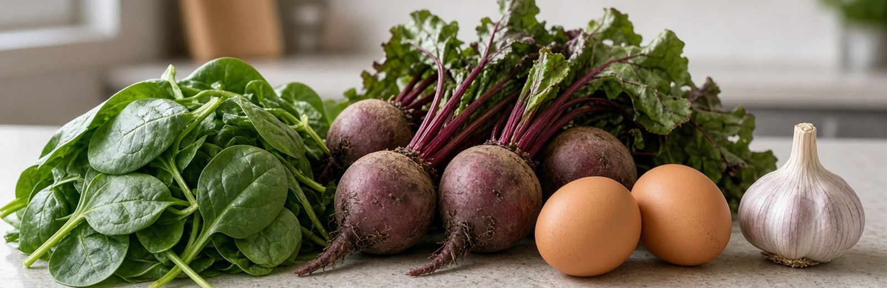

Breast Cancer Beyond Genetics · Part Seven
Supporting The Cell
Part Two explained what breaks. This is how you rebuild it.
Three systems do the work: the mitochondria that hold your self-destruct switch, the methylation that neutralizes dangerous estrogen metabolites, and the antioxidant network that protects both. All three respond to specific inputs.
Start Where It Is Free
Before any supplement, understand this: you can grow new mitochondria. They are not a fixed inheritance. Your cells build more of them in response to demand, a process called mitochondrial biogenesis — and nothing in a bottle competes with the four things that trigger it.
Notice that all four are things your great-grandmother got without trying: physical work, gaps between meals, real darkness, and a house that was cold in winter.
The Mitochondrial Cofactors
These are the nutrients your electron transport chain physically requires. Deficiency in any of them means the chain runs badly — which, from Part Two, means more electron leakage and more reactive byproducts.
A practical note: several common medications deplete these. Statins lower CoQ10. Metformin and acid-blocking drugs deplete B12 and magnesium. If you take any of them long-term, that is worth knowing rather than guessing about.
Glutathione: Your Master Antioxidant
Glutathione is the compound your cells rely on most heavily to neutralize oxidative damage — including the superoxide produced when blood sugar overloads the electron chain. It is built from three amino acids: glycine, cysteine, and glutamate.
Go deeper: cysteine is the bottleneck
Cysteine is the bottleneck. Your body has plenty of the other two. The rate-limiting step is cysteine availability, which is why NAC — N-acetylcysteine — is the supplement most often used to raise glutathione. Swallowing glutathione itself is largely wasted, because it is broken down before absorption; liposomal forms do better.
The finding that matters most for breast tissue
NAC does something beyond raising glutathione. It reacts directly with estrogen quinones — the reactive molecules from Part Two that attack DNA — forming stable conjugates that prevent estrogen-DNA adducts from ever forming.
Food sources that support glutathione: cruciferous vegetables, garlic and onions for their sulfur, asparagus, avocado, and adequate quality protein. Whey protein is unusually rich in cysteine.
Vitamin C, Taken By Mouth
Oral vitamin C regenerates vitamin E and glutathione back to their active forms, supports the collagen that builds the tissue structure holding abnormal cells in check, and supports immune function including natural killer cells.
What it cannot do is reach the concentrations used in the intravenous research you may have heard about. Your gut transporters saturate, so blood levels top out around 0.2 millimolar no matter how much you swallow — while intravenous delivery reaches up to 20 millimolar, roughly a hundred times higher. Those are two different interventions, and Part Eight covers the second one.
High oral doses cause loose stools. That is your body telling you absorption is saturated.
Supporting Methylation

From Part Two: methylation is how your body tags the dangerous 4-OH estrogen metabolites so they become harmless and easy to excrete. The enzyme is COMT, and it does not run on willpower. It runs on nutrients.
And the thing that works against it: alcohol impairs folate metabolism directly. That is the mechanism from Part Three — alcohol does not only raise estrogen, it disables the system that neutralizes estrogen’s most damaging metabolites. Both effects, same drink.
The Compound That Redirects Estrogen
Part Two described three routes estrogen can take when your body breaks it down — a safe one, a growth one, and a damaging one.
Here is what that chapter did not say: you have some say in which route it takes.
It is a competition
Picture three doors. When estrogen is ready to be broken down, three different enzymes are racing to reach it first. Whichever one gets there decides which door that molecule goes out.
And those enzymes are not fixed quantities. Your body builds more or fewer of them depending on what you give it. So the proportion going out each door is not your fate. It is closer to a setting.
The two problem doors cause different kinds of harm
This is worth separating, because it explains why one solution does not cover both.
Same hormone. Two entirely different problems. They need different tools, which is the point this chapter has been building toward.
Where DIM comes in
When you chew a cruciferous vegetable, it releases a compound called I3C. Your stomach acid then converts I3C into DIM — and that conversion turns out to be the whole point. Researchers found that when I3C bypasses the stomach, it stops working. DIM is the active ingredient. I3C is the delivery truck.
Worth knowing if you take acid-blocking medication, because that conversion may not happen properly.
Once DIM is in your cells, it flips a switch that tells them to build more of the enzyme handling the safe door.
More of that enzyme means more estrogen reaches it first — and less is left over for the other two routes.
The Number Almost No Woman Is Given
Because the three doors compete, what matters is not how much goes out any one of them. It is how the traffic splits between them.
Researchers measure this directly in urine: how much left through the safe door, divided by how much left through the growth door.
If those two numbers are equal, the ratio is 1.0. If more is going out the safe door, it sits above 1.0. If the growth door is winning, it drops below.
The threshold in the research is 0.9. Women whose ratio fell below 0.9 have been reported to carry roughly ten times the risk of developing breast cancer compared with women at 0.9 or higher.
Almost no woman is ever offered this measurement, testing something she was never told was adjustable. Part Eleven covers how to get it done.
DIM Also Increases Your DNA Repair
BRCA1 is a gene. Everyone has it, including you. Its job is repairing broken DNA — it is one of the cleanup systems from Part Two.
You have heard of it in the context of inherited mutations, where someone is born with a faulty copy and their repair capacity is compromised for life. That is why it carries high risk.
But for the vast majority of women, BRCA1 works fine. The question is not whether you have it — it is how much of it your cells are actively producing. That amount varies, and it is not fixed.
DIM increases it.
More BRCA1 protein means more DNA repair capacity — which matters especially in breast tissue, where the damaging door produces exactly the kind of DNA damage BRCA1 exists to fix.
Being straight with you about the evidence
The mechanism is well described. The human studies are small.
I3C at 300 to 600mg daily is well tolerated and shifts women toward the safe route within about a month. In women carrying a BRCA1 mutation, DIM roughly tripled the ratio in those past menopause but did not move it on average in those before menopause — and neither finding was statistically solid, because the study included thirteen women in total.
Consistent direction, tiny numbers. Which is the pattern throughout this book, for the reason given in Part One.
Cruciferous vegetables deliver I3C, DIM, and sulforaphane together, which is why the food outperforms the pill. If you do supplement, studies have used roughly 100 to 300mg of DIM or 300 to 600mg of I3C. DIM interacts with estrogen receptors directly, so anyone taking tamoxifen or an aromatase inhibitor should clear it with their oncologist first.
Three Interventions, One Pathway
Here is where this chapter comes together. The estrogen pathway from Part Two can be supported at three separate points, and each one has a different tool.
Three tools, three points, one pathway. This is what it looks like to work on a mechanism rather than a symptom — and it is exactly the kind of layered approach that no single product can be sold as, which is part of why you have not heard it.
How To Actually Use This Chapter
Not as a shopping list. Two reasons.
First, which of these you need depends on you — your labs, your absorption, your medications, your genetics, and what you already eat. Someone with adequate magnesium and good methylation gets nothing from more of either. Someone deficient gets a great deal.
Second, some interact with cancer treatment. Certain antioxidants may work against therapies that kill cancer cells by generating oxidative stress. This is genuinely contested among oncologists, and it is a conversation to have rather than a decision to make alone.
- Do the free things first. Exercise, the overnight gap, real darkness, and heat or cold exposure.
- Eat the food sources. Cruciferous vegetables, greens, eggs, liver, garlic, onions, beets, quality protein.
- Test before supplementing. Part Eleven covers which markers actually tell you something.
- If you are in treatment, bring any supplement to your oncology team first.